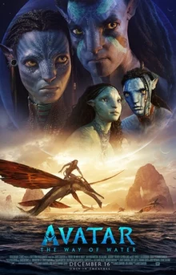

Ultimes pel·lícules
|  | titol | Avatar: The Way of Water | |
|---|---|---|---|
| Genere | Aventures, ciencia-ficció, drama, èpic | ||
| Qualificació | PG-13 | ||
| Direcció | James cameron | ||
| Sinopsis | Jake Sully viu amb la seva nova família al planeta de Pandora. Quan una amenaça coneguda torna, Jake ha de treballar amb Neytiri i l'exèrcit de la raça na'vi per protegir el seu planeta. | ||
 |
Titol | One Piece Film: Red | |
|---|---|---|---|
| Gènere | aventures, comèdia, fantàstic, acció | ||
| Qualificació | PG-13 | ||
| Direcció | Gorõ Taniguchi | ||
| Sinopsis | Uta, la cantant més estimada del món, és coneguda per ocultar la seva pròpia identitat quan actua. Ara, per primera vegada, Uta es revelarà al món en un concert en directe. Mentre el recinte s'omple de tota mena de fans (pirates emocionats, l'Armada observant de prop i els pirates del Barret de Palla liderats per en Ruffy que simplement hi assisteixen per gaudir de la seva actuació sonora), la veu que tot el món ha estat esperant està a punt de sonar. La història comença amb el fet impactant que és la "filla" d'en Shanks. | ||
 |
Titol | Alcarràs | |
|---|---|---|---|
| Gènere | drama rural | ||
| Direcció | Carla Simón i Pipó | ||
| Sinopsis | Després de 80 anys i tres generacions conreant la mateixa terra, la família Solé s'enfronta a una amenaça sense precedents. Ambientada a Alcarràs (el Segrià), la trama conforma un drama rural familiar sobre la desaparició de les activitats agrícoles que gira al voltant de l'amenaça d'instal·lar un camp de panells fotovoltaics en una parcel·la agrícola dedicada fins llavors al conreu del presseguer, fet que empeny els membres de la nissaga pagesa a retrobar-se i reconèixer-se enfront de l'adversitat. | ||
 |
Titol | El hombre de las mil caras | |
|---|---|---|---|
| Gènere | Drama | ||
| Direcció | Alberto Rodríguez | ||
| Sinopsis | La pel·lícula, basada en fets reals, se centra en la relació entre l'agent secret espanyol Francisco Paesa i l'ex-director general de la Guardia Civil Luís Roldán. Paesa (Eduard Fernández), que és responsable de l'operació contra ETA més importat de la història, es veu involucrat en un cas d'extorsió en plena crisi dels GAL, i ha d'abandonar el país. Al seu retorn dos anys després, està arruïnat. Rep aleshores la visita de Luis Roldán (Carlos Santos) i de la seva muller Nieves Fernández (Marta Etura), que li ofereixen un milió de dòlars si els ajuda a salvar 1.500 milions de pessetes robats. Amb la col·laboració del seu inseparable amic, el pilot Jesús Camoes (José Coronado), Paesa elabora un pla infal·lible per tal d'ajudar a Luis Roldán. | ||